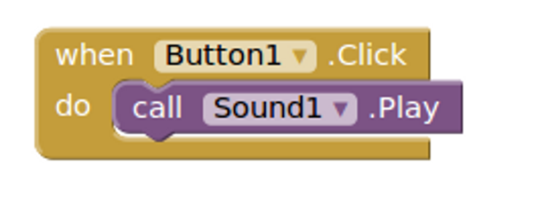

Pieces of MIT App Inventor
- Client – User’s Browser
- Server – A Webserver hosted in Google’s App Engine
- Device (or Emulator) – To view and debug your App
- Buildserver – To build the finished product
- Three Languages
- Javascript
- Java (Three Flavors)
- YAIL (Really Scheme with Macros)
3 Flavors of Java!
- Java 7 – Runs in the server
- Java 5(!) – Compiled to “Dex” Code on the Device
- Java 6 – Compiled to Javascript for Google Web Toolkit (Client)
Google Web Toolkit (GWT)
- Write code in Java
- Compile it to Javascript to run in the browser
- It is still a Javascript runtime
- So you still have
callbacks and other
asynchronous stuff!
Server/Client Layout
- ode/*.gwt.rpc and ode/*.html – GWT Compiled Code
- blockly-all.js – Blockly Code (concatenated or minified)
Compilation Options
- “pretty” (GWT), none (Closure)
- Optimized (GWT), minified (Closure)
- Compiled code is much smaller and a little faster
- But nearly impossible to debug!
Client Environment
- Designer – Google Web Toolkit (Java Compiled to Javascript)
- Blockly – Javascript using Google’s Closure Library (and compiler)
Server Environment
- Java Webserver (Jetty) implemented in Google App Engine
- Use Google’s “Bigtable” Datastore and “Blobstore”
- Plan to migrate from Blobstore to “Google Cloud Storage”
- Hosts the client code
- Provides for Project Storage
KAWA – Scheme for Java
- Scheme written in Java
- Can make calls to Java classes/methods
- Can run interpreted, or Compiled
- This is a very useful property for App Inventor
The Companion
- MIT App Inventor Components (compiled)
- Httpd to listen to the network
- Kawa to evaluate forms sent from the network
- Some Hair to glue it together
Blocks Compile to YAIL
- Blocks Compile to YAIL
- YAIL is sent to the Companion
- Companion executes the YAIL, often redefining a function (event).
Blocks –> Yail

(add-component Screen1 Button Button1
(set-and-coerce-property! 'Button1 'Image "kitty.png" 'text)
(set-and-coerce-property! 'Button1 'ShowFeedback #f 'boolean))
(define-event Button1 Click()(set-this-form)
(call-component-method 'Sound1 'Play (*list-for-runtime* ) '()))
Yail –> Companion
- Most of the magic is in replmgr.js
- Generate complete Yail for each workspace change
- Keep track of the Yail for Each block
- When it changes, send an
update to the
Companion
(but no more
often then every 0.5 seconds)
- Component changes (made in the designer) require a complete reload
Packaging an App
- Compile the Blocks to Yail
- Compile the Yail to Java
- Compile the Java (and libraries) to Dex
- Package it all Up, and you are good to go
- Have dedicated buildserver to perform the compilation